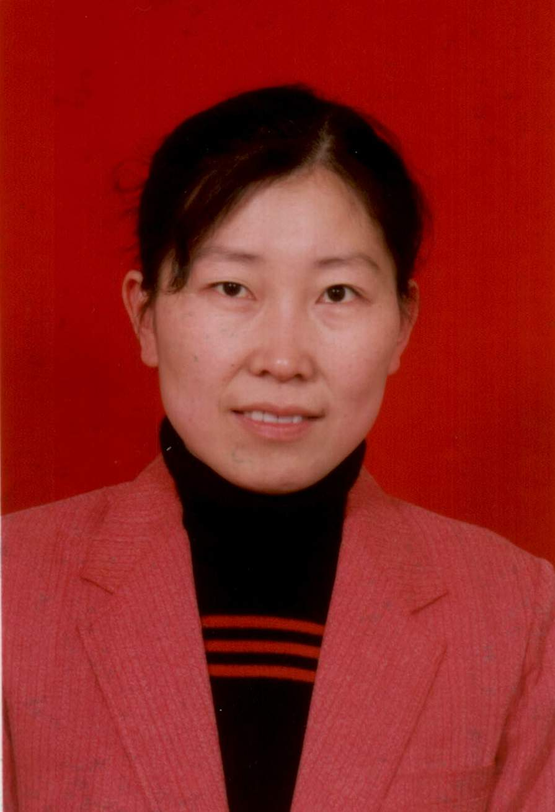

王慧-教授
个人经历：
分别于1982年、1988年获浙江大学工学学士，硕士学位；于1989年、1995年、2002年被聘任为讲师、副教授、教授。
研究工作：
截至2008 年底，被SCI、EI 检索论文约40 篇，ISTP 检索20 余篇，在国内外学术刊物和国际会议上发表论文90余篇。作为撰稿人参与编著《过程控制手册》、《化工大百科全书》、《计算机科学技术百科全书》等辞典，并作为主编编著了教材《计算机控制系统》（国家十一五规划教材），《控制系统数字仿真与计算机辅助设计》（国家十一五规划教材），参与编辑《系统工程导论》教材。曾获省部级科技进步一等奖1次，三等奖2 次。长期从事复杂系统的建模、控制、仿真和优化的研究和产业化工作。作为项目负责人承担的国家项目有：“八五”、“九五”、“十一五”；攻关项目，863项目，省自然科学基金1项等。
研究方向：目前的研究兴趣除了面向工业对象以外，还扩展到了面向智能交通系统，正承担国家863高科技项目“基于混杂模型与在线数据融合的城市交通仿真与评估技术”。
教学工作：
承担了多门本科生的课程：如自动控制理论。
工业研究领域：1. 复杂工程系统的建模、控制与优化 2. 智能交通系统工程 3. 工业过程的建模、控制与优化
以上内容摘自王慧老师个人主页http://mypage.zju.edu.cn/zdqzwwh